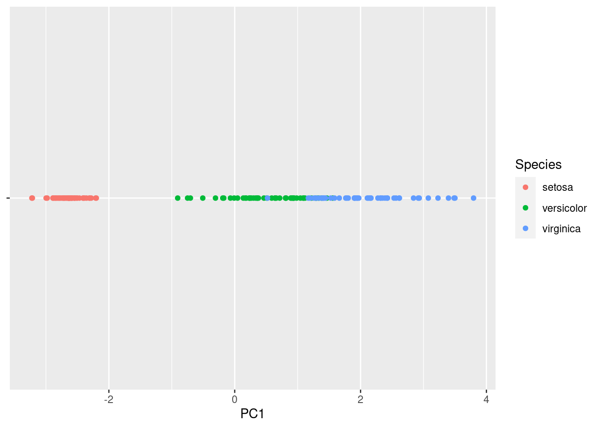
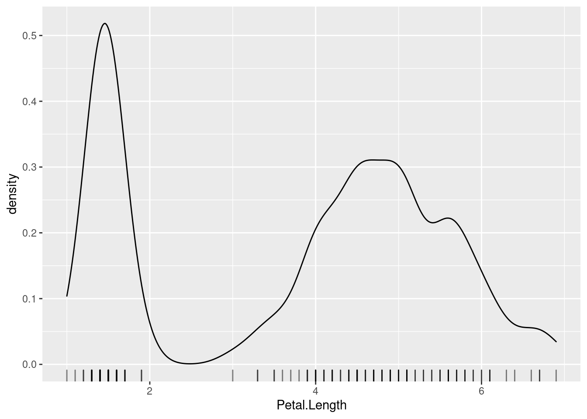
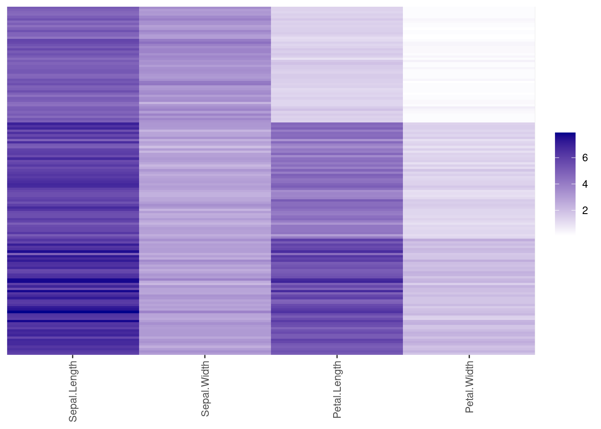

Chapter 2 Data
This chapter gives examples for cleaning and preparing data for data mining.
Packages used for this chapter: arules (Hahsler, Buchta, Gruen, et al., 2021), caret (Kuhn, 2021), factoextra (Kassambara & Mundt, 2020), GGally (Schloerke et al., 2021), plotly (Sievert et al., 2021), proxy (Meyer & Buchta, 2021), sampling (Tillé & Matei, 2021), seriation (Hahsler, Buchta, & Hornik, 2021), tidyverse (Wickham, 2021c)
2.1 The Iris Dataset
We will use a toy dataset that comes with R. Fisher’s iris data set gives the measurements in centimeters of the variables sepal length and width and petal length and width, respectively, for 150 50 flowers from each of 3 species of iris. The species are Iris Setosa, Iris Versicolor, and Iris Virginica.
For more details see: ? iris
Load the iris data set and convert the data.frame into a tibble. Note: datasets that come with R or R packages can be loaded with data().
library(tidyverse)
data(iris)
iris <- as_tibble(iris)
iris## # A tibble: 150 x 5
## Sepal.Length Sepal.Width Petal.Length Petal.Width
## <dbl> <dbl> <dbl> <dbl>
## 1 5.1 3.5 1.4 0.2
## 2 4.9 3 1.4 0.2
## 3 4.7 3.2 1.3 0.2
## 4 4.6 3.1 1.5 0.2
## 5 5 3.6 1.4 0.2
## 6 5.4 3.9 1.7 0.4
## 7 4.6 3.4 1.4 0.3
## 8 5 3.4 1.5 0.2
## 9 4.4 2.9 1.4 0.2
## 10 4.9 3.1 1.5 0.1
## # … with 140 more rows, and 1 more variable:
## # Species <fct>We see that the data contains 150 rows (flowers) and 5 features. tibbles only show the first few rows and do not show all features, if they do not fit the screen width. We can force print to show all features by changing the width.
print(iris, width = Inf)## # A tibble: 150 x 5
## Sepal.Length Sepal.Width Petal.Length Petal.Width
## <dbl> <dbl> <dbl> <dbl>
## 1 5.1 3.5 1.4 0.2
## 2 4.9 3 1.4 0.2
## 3 4.7 3.2 1.3 0.2
## 4 4.6 3.1 1.5 0.2
## 5 5 3.6 1.4 0.2
## 6 5.4 3.9 1.7 0.4
## 7 4.6 3.4 1.4 0.3
## 8 5 3.4 1.5 0.2
## 9 4.4 2.9 1.4 0.2
## 10 4.9 3.1 1.5 0.1
## Species
## <fct>
## 1 setosa
## 2 setosa
## 3 setosa
## 4 setosa
## 5 setosa
## 6 setosa
## 7 setosa
## 8 setosa
## 9 setosa
## 10 setosa
## # … with 140 more rows2.2 Data Quality
Assessing the quality of the available data is crucial before we start using the data. Start with summary statistics for each column to identify outliers and missing values.
summary(iris)## Sepal.Length Sepal.Width Petal.Length
## Min. :4.30 Min. :2.00 Min. :1.00
## 1st Qu.:5.10 1st Qu.:2.80 1st Qu.:1.60
## Median :5.80 Median :3.00 Median :4.35
## Mean :5.84 Mean :3.06 Mean :3.76
## 3rd Qu.:6.40 3rd Qu.:3.30 3rd Qu.:5.10
## Max. :7.90 Max. :4.40 Max. :6.90
## Petal.Width Species
## Min. :0.1 setosa :50
## 1st Qu.:0.3 versicolor:50
## Median :1.3 virginica :50
## Mean :1.2
## 3rd Qu.:1.8
## Max. :2.5You can also summarize specific columns using a statistic function like mean.
iris %>% summarize_if(is.numeric, mean)## # A tibble: 1 x 4
## Sepal.Length Sepal.Width Petal.Length Petal.Width
## <dbl> <dbl> <dbl> <dbl>
## 1 5.84 3.06 3.76 1.20Another way to inspect your data is to use a scatterplot matrix (we use here ggpairs from package GGally). In this plot, you can visually identify noise data points and ouliers (points that are far from the majority of other points).
library(GGally)## Registered S3 method overwritten by 'GGally':
## method from
## +.gg ggplot2ggpairs(iris, aes(color = Species))## `stat_bin()` using `bins = 30`. Pick better value
## with `binwidth`.## `stat_bin()` using `bins = 30`. Pick better value
## with `binwidth`.
## `stat_bin()` using `bins = 30`. Pick better value
## with `binwidth`.
## `stat_bin()` using `bins = 30`. Pick better value
## with `binwidth`.
See if you can spot the one red dot that is far away from all others.
We need complete data for many data mining methods. To remove missing values (NA) and
duplicates (identical data points which might be a mistake in the data), we often do this:
clean.data <- iris %>% drop_na() %>% unique()
summary(clean.data)## Sepal.Length Sepal.Width Petal.Length
## Min. :4.30 Min. :2.00 Min. :1.00
## 1st Qu.:5.10 1st Qu.:2.80 1st Qu.:1.60
## Median :5.80 Median :3.00 Median :4.30
## Mean :5.84 Mean :3.06 Mean :3.75
## 3rd Qu.:6.40 3rd Qu.:3.30 3rd Qu.:5.10
## Max. :7.90 Max. :4.40 Max. :6.90
## Petal.Width Species
## Min. :0.1 setosa :50
## 1st Qu.:0.3 versicolor:50
## Median :1.3 virginica :49
## Mean :1.2
## 3rd Qu.:1.8
## Max. :2.5Note that one case (non-unique) is gone leaving only 149 flowers. The data did not contain missing values, but if it did, they would also have been dropped. Typically, you should spend more time on data cleaning.
2.3 Aggregation
Data often contains groups and we want to compare these groups. We group the iris dataset by species and then calculate a summary statistic for each group.
iris %>% group_by(Species) %>% summarize_all(mean)## # A tibble: 3 x 5
## Species Sepal.Length Sepal.Width Petal.Length
## <fct> <dbl> <dbl> <dbl>
## 1 setosa 5.01 3.43 1.46
## 2 versicolor 5.94 2.77 4.26
## 3 virginica 6.59 2.97 5.55
## # … with 1 more variable: Petal.Width <dbl>iris %>% group_by(Species) %>% summarize_all(median)## # A tibble: 3 x 5
## Species Sepal.Length Sepal.Width Petal.Length
## <fct> <dbl> <dbl> <dbl>
## 1 setosa 5 3.4 1.5
## 2 versicolor 5.9 2.8 4.35
## 3 virginica 6.5 3 5.55
## # … with 1 more variable: Petal.Width <dbl>Using this information, we can compare how features differ between groups.
2.4 Sampling
Sampling is often used in data mining to reduce the dataset size.
2.4.1 Random Sampling
The built-in sample function can sample from a vector with replacement.
sample(c("A", "B", "C"), size = 10, replace = TRUE)## [1] "B" "B" "B" "B" "B" "A" "C" "A" "C" "A"We often want to sample rows from a dataset. This can be done by sampling without replacement from a vector with row indices (using the functions seq and nrow). The sample is vector is then used to subset the rows of the dataset.
take <- sample(seq(nrow(iris)), size = 15)
take## [1] 66 8 17 47 135 87 103 12 145 43 54 27
## [13] 22 109 146iris[take, ]## # A tibble: 15 x 5
## Sepal.Length Sepal.Width Petal.Length Petal.Width
## <dbl> <dbl> <dbl> <dbl>
## 1 6.7 3.1 4.4 1.4
## 2 5 3.4 1.5 0.2
## 3 5.4 3.9 1.3 0.4
## 4 5.1 3.8 1.6 0.2
## 5 6.1 2.6 5.6 1.4
## 6 6.7 3.1 4.7 1.5
## 7 7.1 3 5.9 2.1
## 8 4.8 3.4 1.6 0.2
## 9 6.7 3.3 5.7 2.5
## 10 4.4 3.2 1.3 0.2
## 11 5.5 2.3 4 1.3
## 12 5 3.4 1.6 0.4
## 13 5.1 3.7 1.5 0.4
## 14 6.7 2.5 5.8 1.8
## 15 6.7 3 5.2 2.3
## # … with 1 more variable: Species <fct>dplyr from tidyverse lets us sample rows from tibbles directly. I set the random number generator seed to make the results reproducible.
set.seed(1000)
s <- iris %>% slice_sample(n = 15)
ggpairs(s, aes(color = Species))## `stat_bin()` using `bins = 30`. Pick better value
## with `binwidth`.
## `stat_bin()` using `bins = 30`. Pick better value
## with `binwidth`.
## `stat_bin()` using `bins = 30`. Pick better value
## with `binwidth`.
## `stat_bin()` using `bins = 30`. Pick better value
## with `binwidth`.
2.4.2 Stratified Sampling
Stratified sampling is a method of sampling from a population which can be partitioned into subpopulations, while controlling the proportions of the subpopulation in the resulting sample.
In the following, the subpopulations are the different types of species and we want
to make sure to sample the same number (5) flowers from each. The library sampling
provides a function for stratified sampling. The column ID_unit in the resulting data.frame
contains the row numbers of the sampled rows. We can use slice from dplyr to select the
sampled rows.
library(sampling)
id2 <- strata(iris, stratanames = "Species", size = c(5,5,5), method = "srswor")
id2## Species ID_unit Prob Stratum
## 7 setosa 7 0.1 1
## 9 setosa 9 0.1 1
## 10 setosa 10 0.1 1
## 24 setosa 24 0.1 1
## 48 setosa 48 0.1 1
## 58 versicolor 58 0.1 2
## 62 versicolor 62 0.1 2
## 74 versicolor 74 0.1 2
## 78 versicolor 78 0.1 2
## 99 versicolor 99 0.1 2
## 106 virginica 106 0.1 3
## 107 virginica 107 0.1 3
## 127 virginica 127 0.1 3
## 135 virginica 135 0.1 3
## 145 virginica 145 0.1 3s2 <- iris %>% slice(id2$ID_unit)
ggpairs(s2, aes(color = Species))## `stat_bin()` using `bins = 30`. Pick better value
## with `binwidth`.
## `stat_bin()` using `bins = 30`. Pick better value
## with `binwidth`.
## `stat_bin()` using `bins = 30`. Pick better value
## with `binwidth`.
## `stat_bin()` using `bins = 30`. Pick better value
## with `binwidth`.
2.5 Features
2.5.1 Dimensionality Reduction
2.5.1.1 Principal Components Analysis (PCA)
PCA calculates principal components (a new orthonormal basis vectors in the data space) from data points such that the first principal component explains the most variability in the data, the second the next most and so on. In data analysis, PCA is used to project high-dimensional data points onto the first few (typically two) principal components for visualization as a scatter plot and as preprocessing for modeling (e.g., before k-means clustering). Points that are closer together in the high-dimensional space, tend also be closer together in the lower-dimensional space,
Look at the 3d data using an interactive 3d plot (needs package plotly). However, 3d plots are hard to print out and the iris data is actually in 4 dimensions.
##library(plotly) # I don't load the package because it's namespace clashes with select in dplyr.
plotly::plot_ly(iris, x = ~Sepal.Length, y = ~Petal.Length, z = ~Sepal.Width,
size = ~Petal.Width, color = ~Species, type="scatter3d")## No scatter3d mode specifed:
## Setting the mode to markers
## Read more about this attribute -> https://plotly.com/r/reference/#scatter-mode## Warning: `line.width` does not currently support
## multiple values.
## Warning: `line.width` does not currently support
## multiple values.
## Warning: `line.width` does not currently support
## multiple values.The principal components can be calculated from a matrix using the function prcomp(). We select
all numeric columns (by removing the species column) and convert the data.frame into a matrix before
the calculation.
pc <- iris %>% select(-Species) %>% as.matrix() %>% prcomp()
summary(pc)## Importance of components:
## PC1 PC2 PC3 PC4
## Standard deviation 2.056 0.4926 0.2797 0.15439
## Proportion of Variance 0.925 0.0531 0.0171 0.00521
## Cumulative Proportion 0.925 0.9777 0.9948 1.00000How important is each principal component can also be seen using a scree plot. The plot function for the result of
the prcomp function visualizes how much variability in the data is explained by each additional principal component.
plot(pc, type = "line")
Note that the first principal component (PC1) explains most of the variability in the iris dataset.
To find out what information is stored in the object pc, we can inspect the
raw object (display structure).
str(pc)## List of 5
## $ sdev : num [1:4] 2.056 0.493 0.28 0.154
## $ rotation: num [1:4, 1:4] 0.3614 -0.0845 0.8567 0.3583 -0.6566 ...
## ..- attr(*, "dimnames")=List of 2
## .. ..$ : chr [1:4] "Sepal.Length" "Sepal.Width" "Petal.Length" "Petal.Width"
## .. ..$ : chr [1:4] "PC1" "PC2" "PC3" "PC4"
## $ center : Named num [1:4] 5.84 3.06 3.76 1.2
## ..- attr(*, "names")= chr [1:4] "Sepal.Length" "Sepal.Width" "Petal.Length" "Petal.Width"
## $ scale : logi FALSE
## $ x : num [1:150, 1:4] -2.68 -2.71 -2.89 -2.75 -2.73 ...
## ..- attr(*, "dimnames")=List of 2
## .. ..$ : NULL
## .. ..$ : chr [1:4] "PC1" "PC2" "PC3" "PC4"
## - attr(*, "class")= chr "prcomp"The element x contains the data points projected on the principal components.
We can convert the matrix into a tibble and add the species column from the original
dataset to display the data projected on the first two principal components.
iris_projected <- as_tibble(pc$x) %>% add_column(Species = iris$Species)
ggplot(iris_projected, aes(x = PC1, y = PC2, color = Species)) +
geom_point()
Since the first principal component represents most of the variability, we can also show the data projected only on PC1.
ggplot(iris_projected,
aes(x = PC1, y = 0, color = Species)) +
geom_point() +
scale_y_continuous(expand=c(0,0)) +
theme(axis.text.y = element_blank(),
axis.title.y = element_blank()
)
A plot of the projected data with the original axes added as arrows is called a biplot. If the arrows (original axes) align roughly with the axes of the projection, then they are correlated (linearly dependent).
library(factoextra)## Welcome! Want to learn more? See two factoextra-related books at https://goo.gl/ve3WBafviz_pca(pc)
We can also display only the old and new axes.
fviz_pca_var(pc)
We see Petal.Width and Petal.Length point in the same direction which indicates that they are highly correlated. They are also roughly aligned with PC1 (called Dim1 in the plot) which means that PC1 represents most of the variability of these two variables. Sepal.Width parallel to the y-axis and therefore represented by PC2 (Dim2). Petal.Width/Petal.Length and Sepal.Width are almost at 90 degrees, indicating that they are close to uncorrelated. Sepal.Length correlated to all other variables and represented by both, PC1 and PC2 in the projection.
Another popular method to project data into lower dimensions for visualization is t-distributed stochastic neighbor embedding (t-SNE) available in package Rtsne.
2.5.1.2 Multi-Dimensional Scaling (MDS)
MDS is similar to PCA. Instead of data points, it takes pairwise distances (i.e., a distance matrix) and produces a space where points are placed to represent these distances as well as possible. The axis in this space are called components and are similar to the principal components in PCA.
First, we calculate a distance matrix from the 4-d space of the iris dataset.
d <- iris %>% select(-Species) %>% dist()Metric (classic) MDS tries to reconstruct a 2-d space from the distance matrix. Points with smaller distances are closer in the reconstructed space.
fit <- cmdscale(d, k = 2)
colnames(fit) <- c("comp1", "comp2")
fit <- as_tibble(fit) %>% add_column(Species = iris$Species)
ggplot(fit, aes(x = comp1, y = comp2, color = Species)) + geom_point() The resulting projection is similar (except for rotation and reflection) to the result of PCA.
The resulting projection is similar (except for rotation and reflection) to the result of PCA.
2.5.1.3 Non-Parametric Multidimensional Scaling
Non-parametric multidimensional scaling performs MDS while relaxing the need of linear relationships. Methods are available in package MASS as functions
isoMDS and sammon.
2.5.2 Feature Selection
Feature selection is the process of identifying the features that are used to create a model. We will talk about feature selection when we discuss classification models in Chapter 3 in Feature Selection and Feature Preparation.
2.5.3 Discretize Features
Some data mining methods require discrete data. Discretization converts continuous features into discrete features.
Petal.Width is a continuous feature. Before we perform discretization, we should look at the distribution and see if it gives us an idea how we should group the continuous values into a set of discrete values. A histogram visualizes the distribution of a single continuous feature.
ggplot(iris, aes(x = Petal.Width)) + geom_histogram(binwidth = .2)
The R function cut performs equal interval width discretization.
iris %>% pull(Sepal.Width) %>% cut(breaks = 3)## [1] (2.8,3.6] (2.8,3.6] (2.8,3.6] (2.8,3.6] (2.8,3.6]
## [6] (3.6,4.4] (2.8,3.6] (2.8,3.6] (2.8,3.6] (2.8,3.6]
## [11] (3.6,4.4] (2.8,3.6] (2.8,3.6] (2.8,3.6] (3.6,4.4]
## [16] (3.6,4.4] (3.6,4.4] (2.8,3.6] (3.6,4.4] (3.6,4.4]
## [21] (2.8,3.6] (3.6,4.4] (2.8,3.6] (2.8,3.6] (2.8,3.6]
## [26] (2.8,3.6] (2.8,3.6] (2.8,3.6] (2.8,3.6] (2.8,3.6]
## [31] (2.8,3.6] (2.8,3.6] (3.6,4.4] (3.6,4.4] (2.8,3.6]
## [36] (2.8,3.6] (2.8,3.6] (2.8,3.6] (2.8,3.6] (2.8,3.6]
## [41] (2.8,3.6] (2,2.8] (2.8,3.6] (2.8,3.6] (3.6,4.4]
## [46] (2.8,3.6] (3.6,4.4] (2.8,3.6] (3.6,4.4] (2.8,3.6]
## [51] (2.8,3.6] (2.8,3.6] (2.8,3.6] (2,2.8] (2,2.8]
## [56] (2,2.8] (2.8,3.6] (2,2.8] (2.8,3.6] (2,2.8]
## [61] (2,2.8] (2.8,3.6] (2,2.8] (2.8,3.6] (2.8,3.6]
## [66] (2.8,3.6] (2.8,3.6] (2,2.8] (2,2.8] (2,2.8]
## [71] (2.8,3.6] (2,2.8] (2,2.8] (2,2.8] (2.8,3.6]
## [76] (2.8,3.6] (2,2.8] (2.8,3.6] (2.8,3.6] (2,2.8]
## [81] (2,2.8] (2,2.8] (2,2.8] (2,2.8] (2.8,3.6]
## [86] (2.8,3.6] (2.8,3.6] (2,2.8] (2.8,3.6] (2,2.8]
## [91] (2,2.8] (2.8,3.6] (2,2.8] (2,2.8] (2,2.8]
## [96] (2.8,3.6] (2.8,3.6] (2.8,3.6] (2,2.8] (2,2.8]
## [101] (2.8,3.6] (2,2.8] (2.8,3.6] (2.8,3.6] (2.8,3.6]
## [106] (2.8,3.6] (2,2.8] (2.8,3.6] (2,2.8] (2.8,3.6]
## [111] (2.8,3.6] (2,2.8] (2.8,3.6] (2,2.8] (2,2.8]
## [116] (2.8,3.6] (2.8,3.6] (3.6,4.4] (2,2.8] (2,2.8]
## [121] (2.8,3.6] (2,2.8] (2,2.8] (2,2.8] (2.8,3.6]
## [126] (2.8,3.6] (2,2.8] (2.8,3.6] (2,2.8] (2.8,3.6]
## [131] (2,2.8] (3.6,4.4] (2,2.8] (2,2.8] (2,2.8]
## [136] (2.8,3.6] (2.8,3.6] (2.8,3.6] (2.8,3.6] (2.8,3.6]
## [141] (2.8,3.6] (2.8,3.6] (2,2.8] (2.8,3.6] (2.8,3.6]
## [146] (2.8,3.6] (2,2.8] (2.8,3.6] (2.8,3.6] (2.8,3.6]
## Levels: (2,2.8] (2.8,3.6] (3.6,4.4]Other discretization methods include equal frequency discretization using k-means clustering.
These methods are implemented by several R packages. We use here the implementation in package
arules and visualize the results as histograms with blue lines to separate intervals assigned to
each discrete value.
library(arules)## Loading required package: Matrix##
## Attaching package: 'Matrix'## The following objects are masked from 'package:tidyr':
##
## expand, pack, unpack##
## Attaching package: 'arules'## The following object is masked from 'package:dplyr':
##
## recode## The following objects are masked from 'package:base':
##
## abbreviate, writeiris %>% pull(Petal.Width) %>% discretize(method = "interval", breaks = 3)## [1] [0.1,0.9) [0.1,0.9) [0.1,0.9) [0.1,0.9) [0.1,0.9)
## [6] [0.1,0.9) [0.1,0.9) [0.1,0.9) [0.1,0.9) [0.1,0.9)
## [11] [0.1,0.9) [0.1,0.9) [0.1,0.9) [0.1,0.9) [0.1,0.9)
## [16] [0.1,0.9) [0.1,0.9) [0.1,0.9) [0.1,0.9) [0.1,0.9)
## [21] [0.1,0.9) [0.1,0.9) [0.1,0.9) [0.1,0.9) [0.1,0.9)
## [26] [0.1,0.9) [0.1,0.9) [0.1,0.9) [0.1,0.9) [0.1,0.9)
## [31] [0.1,0.9) [0.1,0.9) [0.1,0.9) [0.1,0.9) [0.1,0.9)
## [36] [0.1,0.9) [0.1,0.9) [0.1,0.9) [0.1,0.9) [0.1,0.9)
## [41] [0.1,0.9) [0.1,0.9) [0.1,0.9) [0.1,0.9) [0.1,0.9)
## [46] [0.1,0.9) [0.1,0.9) [0.1,0.9) [0.1,0.9) [0.1,0.9)
## [51] [0.9,1.7) [0.9,1.7) [0.9,1.7) [0.9,1.7) [0.9,1.7)
## [56] [0.9,1.7) [0.9,1.7) [0.9,1.7) [0.9,1.7) [0.9,1.7)
## [61] [0.9,1.7) [0.9,1.7) [0.9,1.7) [0.9,1.7) [0.9,1.7)
## [66] [0.9,1.7) [0.9,1.7) [0.9,1.7) [0.9,1.7) [0.9,1.7)
## [71] [1.7,2.5] [0.9,1.7) [0.9,1.7) [0.9,1.7) [0.9,1.7)
## [76] [0.9,1.7) [0.9,1.7) [1.7,2.5] [0.9,1.7) [0.9,1.7)
## [81] [0.9,1.7) [0.9,1.7) [0.9,1.7) [0.9,1.7) [0.9,1.7)
## [86] [0.9,1.7) [0.9,1.7) [0.9,1.7) [0.9,1.7) [0.9,1.7)
## [91] [0.9,1.7) [0.9,1.7) [0.9,1.7) [0.9,1.7) [0.9,1.7)
## [96] [0.9,1.7) [0.9,1.7) [0.9,1.7) [0.9,1.7) [0.9,1.7)
## [101] [1.7,2.5] [1.7,2.5] [1.7,2.5] [1.7,2.5] [1.7,2.5]
## [106] [1.7,2.5] [1.7,2.5] [1.7,2.5] [1.7,2.5] [1.7,2.5]
## [111] [1.7,2.5] [1.7,2.5] [1.7,2.5] [1.7,2.5] [1.7,2.5]
## [116] [1.7,2.5] [1.7,2.5] [1.7,2.5] [1.7,2.5] [0.9,1.7)
## [121] [1.7,2.5] [1.7,2.5] [1.7,2.5] [1.7,2.5] [1.7,2.5]
## [126] [1.7,2.5] [1.7,2.5] [1.7,2.5] [1.7,2.5] [0.9,1.7)
## [131] [1.7,2.5] [1.7,2.5] [1.7,2.5] [0.9,1.7) [0.9,1.7)
## [136] [1.7,2.5] [1.7,2.5] [1.7,2.5] [1.7,2.5] [1.7,2.5]
## [141] [1.7,2.5] [1.7,2.5] [1.7,2.5] [1.7,2.5] [1.7,2.5]
## [146] [1.7,2.5] [1.7,2.5] [1.7,2.5] [1.7,2.5] [1.7,2.5]
## attr(,"discretized:breaks")
## [1] 0.1 0.9 1.7 2.5
## attr(,"discretized:method")
## [1] interval
## Levels: [0.1,0.9) [0.9,1.7) [1.7,2.5]iris %>% pull(Petal.Width) %>% discretize(method = "frequency", breaks = 3)## [1] [0.1,0.867) [0.1,0.867) [0.1,0.867) [0.1,0.867)
## [5] [0.1,0.867) [0.1,0.867) [0.1,0.867) [0.1,0.867)
## [9] [0.1,0.867) [0.1,0.867) [0.1,0.867) [0.1,0.867)
## [13] [0.1,0.867) [0.1,0.867) [0.1,0.867) [0.1,0.867)
## [17] [0.1,0.867) [0.1,0.867) [0.1,0.867) [0.1,0.867)
## [21] [0.1,0.867) [0.1,0.867) [0.1,0.867) [0.1,0.867)
## [25] [0.1,0.867) [0.1,0.867) [0.1,0.867) [0.1,0.867)
## [29] [0.1,0.867) [0.1,0.867) [0.1,0.867) [0.1,0.867)
## [33] [0.1,0.867) [0.1,0.867) [0.1,0.867) [0.1,0.867)
## [37] [0.1,0.867) [0.1,0.867) [0.1,0.867) [0.1,0.867)
## [41] [0.1,0.867) [0.1,0.867) [0.1,0.867) [0.1,0.867)
## [45] [0.1,0.867) [0.1,0.867) [0.1,0.867) [0.1,0.867)
## [49] [0.1,0.867) [0.1,0.867) [0.867,1.6) [0.867,1.6)
## [53] [0.867,1.6) [0.867,1.6) [0.867,1.6) [0.867,1.6)
## [57] [1.6,2.5] [0.867,1.6) [0.867,1.6) [0.867,1.6)
## [61] [0.867,1.6) [0.867,1.6) [0.867,1.6) [0.867,1.6)
## [65] [0.867,1.6) [0.867,1.6) [0.867,1.6) [0.867,1.6)
## [69] [0.867,1.6) [0.867,1.6) [1.6,2.5] [0.867,1.6)
## [73] [0.867,1.6) [0.867,1.6) [0.867,1.6) [0.867,1.6)
## [77] [0.867,1.6) [1.6,2.5] [0.867,1.6) [0.867,1.6)
## [81] [0.867,1.6) [0.867,1.6) [0.867,1.6) [1.6,2.5]
## [85] [0.867,1.6) [1.6,2.5] [0.867,1.6) [0.867,1.6)
## [89] [0.867,1.6) [0.867,1.6) [0.867,1.6) [0.867,1.6)
## [93] [0.867,1.6) [0.867,1.6) [0.867,1.6) [0.867,1.6)
## [97] [0.867,1.6) [0.867,1.6) [0.867,1.6) [0.867,1.6)
## [101] [1.6,2.5] [1.6,2.5] [1.6,2.5] [1.6,2.5]
## [105] [1.6,2.5] [1.6,2.5] [1.6,2.5] [1.6,2.5]
## [109] [1.6,2.5] [1.6,2.5] [1.6,2.5] [1.6,2.5]
## [113] [1.6,2.5] [1.6,2.5] [1.6,2.5] [1.6,2.5]
## [117] [1.6,2.5] [1.6,2.5] [1.6,2.5] [0.867,1.6)
## [121] [1.6,2.5] [1.6,2.5] [1.6,2.5] [1.6,2.5]
## [125] [1.6,2.5] [1.6,2.5] [1.6,2.5] [1.6,2.5]
## [129] [1.6,2.5] [1.6,2.5] [1.6,2.5] [1.6,2.5]
## [133] [1.6,2.5] [0.867,1.6) [0.867,1.6) [1.6,2.5]
## [137] [1.6,2.5] [1.6,2.5] [1.6,2.5] [1.6,2.5]
## [141] [1.6,2.5] [1.6,2.5] [1.6,2.5] [1.6,2.5]
## [145] [1.6,2.5] [1.6,2.5] [1.6,2.5] [1.6,2.5]
## [149] [1.6,2.5] [1.6,2.5]
## attr(,"discretized:breaks")
## [1] 0.100 0.867 1.600 2.500
## attr(,"discretized:method")
## [1] frequency
## Levels: [0.1,0.867) [0.867,1.6) [1.6,2.5]iris %>% pull(Petal.Width) %>% discretize(method = "cluster", breaks = 3)## [1] [0.1,0.792) [0.1,0.792) [0.1,0.792)
## [4] [0.1,0.792) [0.1,0.792) [0.1,0.792)
## [7] [0.1,0.792) [0.1,0.792) [0.1,0.792)
## [10] [0.1,0.792) [0.1,0.792) [0.1,0.792)
## [13] [0.1,0.792) [0.1,0.792) [0.1,0.792)
## [16] [0.1,0.792) [0.1,0.792) [0.1,0.792)
## [19] [0.1,0.792) [0.1,0.792) [0.1,0.792)
## [22] [0.1,0.792) [0.1,0.792) [0.1,0.792)
## [25] [0.1,0.792) [0.1,0.792) [0.1,0.792)
## [28] [0.1,0.792) [0.1,0.792) [0.1,0.792)
## [31] [0.1,0.792) [0.1,0.792) [0.1,0.792)
## [34] [0.1,0.792) [0.1,0.792) [0.1,0.792)
## [37] [0.1,0.792) [0.1,0.792) [0.1,0.792)
## [40] [0.1,0.792) [0.1,0.792) [0.1,0.792)
## [43] [0.1,0.792) [0.1,0.792) [0.1,0.792)
## [46] [0.1,0.792) [0.1,0.792) [0.1,0.792)
## [49] [0.1,0.792) [0.1,0.792) [0.792,1.71)
## [52] [0.792,1.71) [0.792,1.71) [0.792,1.71)
## [55] [0.792,1.71) [0.792,1.71) [0.792,1.71)
## [58] [0.792,1.71) [0.792,1.71) [0.792,1.71)
## [61] [0.792,1.71) [0.792,1.71) [0.792,1.71)
## [64] [0.792,1.71) [0.792,1.71) [0.792,1.71)
## [67] [0.792,1.71) [0.792,1.71) [0.792,1.71)
## [70] [0.792,1.71) [1.71,2.5] [0.792,1.71)
## [73] [0.792,1.71) [0.792,1.71) [0.792,1.71)
## [76] [0.792,1.71) [0.792,1.71) [0.792,1.71)
## [79] [0.792,1.71) [0.792,1.71) [0.792,1.71)
## [82] [0.792,1.71) [0.792,1.71) [0.792,1.71)
## [85] [0.792,1.71) [0.792,1.71) [0.792,1.71)
## [88] [0.792,1.71) [0.792,1.71) [0.792,1.71)
## [91] [0.792,1.71) [0.792,1.71) [0.792,1.71)
## [94] [0.792,1.71) [0.792,1.71) [0.792,1.71)
## [97] [0.792,1.71) [0.792,1.71) [0.792,1.71)
## [100] [0.792,1.71) [1.71,2.5] [1.71,2.5]
## [103] [1.71,2.5] [1.71,2.5] [1.71,2.5]
## [106] [1.71,2.5] [0.792,1.71) [1.71,2.5]
## [109] [1.71,2.5] [1.71,2.5] [1.71,2.5]
## [112] [1.71,2.5] [1.71,2.5] [1.71,2.5]
## [115] [1.71,2.5] [1.71,2.5] [1.71,2.5]
## [118] [1.71,2.5] [1.71,2.5] [0.792,1.71)
## [121] [1.71,2.5] [1.71,2.5] [1.71,2.5]
## [124] [1.71,2.5] [1.71,2.5] [1.71,2.5]
## [127] [1.71,2.5] [1.71,2.5] [1.71,2.5]
## [130] [0.792,1.71) [1.71,2.5] [1.71,2.5]
## [133] [1.71,2.5] [0.792,1.71) [0.792,1.71)
## [136] [1.71,2.5] [1.71,2.5] [1.71,2.5]
## [139] [1.71,2.5] [1.71,2.5] [1.71,2.5]
## [142] [1.71,2.5] [1.71,2.5] [1.71,2.5]
## [145] [1.71,2.5] [1.71,2.5] [1.71,2.5]
## [148] [1.71,2.5] [1.71,2.5] [1.71,2.5]
## attr(,"discretized:breaks")
## [1] 0.100 0.792 1.705 2.500
## attr(,"discretized:method")
## [1] cluster
## Levels: [0.1,0.792) [0.792,1.71) [1.71,2.5]ggplot(iris, aes(Petal.Width)) + geom_histogram(binwidth = .2) +
geom_vline(xintercept =
iris %>% pull(Petal.Width) %>% discretize(method = "interval", breaks = 3, onlycuts = TRUE),
color = "blue") +
labs(title = "Discretization: interval", subtitle = "Blue lines are boundaries")
ggplot(iris, aes(Petal.Width)) + geom_histogram(binwidth = .2) +
geom_vline(xintercept =
iris %>% pull(Petal.Width) %>% discretize(method = "frequency", breaks = 3, onlycuts = TRUE),
color = "blue") +
labs(title = "Discretization: frequency", subtitle = "Blue lines are boundaries")
ggplot(iris, aes(Petal.Width)) + geom_histogram(binwidth = .2) +
geom_vline(xintercept =
iris %>% pull(Petal.Width) %>% discretize(method = "cluster", breaks = 3, onlycuts = TRUE),
color = "blue") +
labs(title = "Discretization: cluster", subtitle = "Blue lines are boundaries")
2.5.4 Standardize Data
Standardizing (scaling, normalizing) the range of features values to make them comparable. The most popular method is to convert the values of each feature to z-scores. by subtracting the mean (centering) and dividing by the standard deviation (scaling).
Note: tidyverse currently does not have a simple scale function, so I make one that provides a wrapper for the standard scale function in R:
scale_numeric <- function(x) x %>% mutate_if(is.numeric, function(y) as.vector(scale(y)))
iris.scaled <- iris %>% scale_numeric()
iris.scaled## # A tibble: 150 x 5
## Sepal.Length Sepal.Width Petal.Length Petal.Width
## <dbl> <dbl> <dbl> <dbl>
## 1 -0.898 1.02 -1.34 -1.31
## 2 -1.14 -0.132 -1.34 -1.31
## 3 -1.38 0.327 -1.39 -1.31
## 4 -1.50 0.0979 -1.28 -1.31
## 5 -1.02 1.25 -1.34 -1.31
## 6 -0.535 1.93 -1.17 -1.05
## 7 -1.50 0.786 -1.34 -1.18
## 8 -1.02 0.786 -1.28 -1.31
## 9 -1.74 -0.361 -1.34 -1.31
## 10 -1.14 0.0979 -1.28 -1.44
## # … with 140 more rows, and 1 more variable:
## # Species <fct>summary(iris.scaled)## Sepal.Length Sepal.Width Petal.Length
## Min. :-1.864 Min. :-2.426 Min. :-1.562
## 1st Qu.:-0.898 1st Qu.:-0.590 1st Qu.:-1.222
## Median :-0.052 Median :-0.132 Median : 0.335
## Mean : 0.000 Mean : 0.000 Mean : 0.000
## 3rd Qu.: 0.672 3rd Qu.: 0.557 3rd Qu.: 0.760
## Max. : 2.484 Max. : 3.080 Max. : 1.780
## Petal.Width Species
## Min. :-1.442 setosa :50
## 1st Qu.:-1.180 versicolor:50
## Median : 0.132 virginica :50
## Mean : 0.000
## 3rd Qu.: 0.788
## Max. : 1.706The standardized feature has a mean of zero and is measured in standard deviations away from zero. Most “normal” values will fall in the range [-3,3] (standard deviations).
2.6 Proximities: Similarities and Distances
R stores proximity as dissimilarities/distances matrices. Similarities are first converted to dissimilarities. Distances are symmetric, i.e., the distance from A to B is the same as the distance from B to A. R therefore stores only a triangle (typically the lower triangle) of the distance matrix.
2.6.1 Minkowsky Distances
The Minkowsky distance is a family of metric distances including Euclidean and Manhattan distance. To avoid one feature to dominate the distance calculation, scaled data is typically used.
iris_sample <- iris.scaled %>% select(-Species) %>% slice(1:5)
iris_sample## # A tibble: 5 x 4
## Sepal.Length Sepal.Width Petal.Length Petal.Width
## <dbl> <dbl> <dbl> <dbl>
## 1 -0.898 1.02 -1.34 -1.31
## 2 -1.14 -0.132 -1.34 -1.31
## 3 -1.38 0.327 -1.39 -1.31
## 4 -1.50 0.0979 -1.28 -1.31
## 5 -1.02 1.25 -1.34 -1.31Calculate distances matrices between the first 5 flowers.
dist(iris_sample, method="euclidean")## 1 2 3 4
## 2 1.172
## 3 0.843 0.522
## 4 1.100 0.433 0.283
## 5 0.259 1.382 0.988 1.246dist(iris_sample, method="manhattan")## 1 2 3 4
## 2 1.389
## 3 1.228 0.757
## 4 1.578 0.648 0.463
## 5 0.350 1.497 1.337 1.687dist(iris_sample, method="maximum")## 1 2 3 4
## 2 1.147
## 3 0.688 0.459
## 4 0.918 0.362 0.229
## 5 0.229 1.377 0.918 1.147We see that only the lower triangle of the distance matrices are stored (note that rows start with row 2).
2.6.2 Distances for Binary Data
Binary data can be encodes as 0 and 1 (numeric) or TRUE and FALSE (logical).
b <- rbind(
c(0,0,0,1,1,1,1,0,0,1),
c(0,0,1,1,1,0,0,1,0,0)
)
b## [,1] [,2] [,3] [,4] [,5] [,6] [,7] [,8] [,9]
## [1,] 0 0 0 1 1 1 1 0 0
## [2,] 0 0 1 1 1 0 0 1 0
## [,10]
## [1,] 1
## [2,] 0b_logical <- apply(b, MARGIN = 2, as.logical)
b_logical## [,1] [,2] [,3] [,4] [,5] [,6] [,7] [,8]
## [1,] FALSE FALSE FALSE TRUE TRUE TRUE TRUE FALSE
## [2,] FALSE FALSE TRUE TRUE TRUE FALSE FALSE TRUE
## [,9] [,10]
## [1,] FALSE TRUE
## [2,] FALSE FALSE2.6.2.1 Hamming Distance
The Hamming distance is the number of mis-matches between two binary vectors. For 0-1 data this is equivalent to the Manhattan distance and also the squared Euclidean distance.
dist(b, method = "manhattan")## 1
## 2 5dist(b, method = "euclidean")^2## 1
## 2 52.6.2.2 Jaccard Index
The Jaccard index is a similarity measure that focuses on matching 1s. R converts the similarity into a dissimilarity using \(d_{J} = 1 - s_{J}\).
dist(b, method = "binary")## 1
## 2 0.7142.6.3 Distances for Mixed Data
Most distance measures work only on numeric data. Often we have a mixture of numbers and nominal features like this data:
people <- tibble(
height = c( 160, 185, 170),
weight = c( 52, 90, 75),
sex = c( "female", "male", "male")
)
people## # A tibble: 3 x 3
## height weight sex
## <dbl> <dbl> <chr>
## 1 160 52 female
## 2 185 90 male
## 3 170 75 maleNote: Nominal features need to be a factor and not character (<chr>).
people <- people %>% mutate_if(is.character, factor)
people## # A tibble: 3 x 3
## height weight sex
## <dbl> <dbl> <fct>
## 1 160 52 female
## 2 185 90 male
## 3 170 75 male2.6.3.1 Gower’s Coefficient
Gower’s coefficient of similarity works with mixed data by calculating the appropriate similarity
for each feature and then
aggregating them into a single measure. The package proxy implements
Gower’s coefficient converted into a distance.
library(proxy)##
## Attaching package: 'proxy'## The following object is masked from 'package:Matrix':
##
## as.matrix## The following objects are masked from 'package:stats':
##
## as.dist, dist## The following object is masked from 'package:base':
##
## as.matrixd_Gower <- dist(people, method = "Gower")
d_Gower## 1 2
## 2 1.000
## 3 0.668 0.332Gower’s coefficient calculation implicitly scales the data because it calculates distances on each feature individualy, so no need to scale the data first.
2.6.3.2 Using Euclidean Distance with Mixed Data
Sometimes methods (e.g., k-means) can only use Euclidean distance. In this case, nominal features can be converted into 0-1 dummy variables. After scaling, Euclidean distance will result in a usable distance measure.
We use package caret to create dummy variables.
library(caret)## Loading required package: lattice##
## Attaching package: 'caret'## The following object is masked from 'package:sampling':
##
## cluster## The following object is masked from 'package:purrr':
##
## liftdata_dummy <- dummyVars(~., people) %>% predict(people)
data_dummy## height weight sex.female sex.male
## 1 160 52 1 0
## 2 185 90 0 1
## 3 170 75 0 1Note that feature sex has now two columns. If we want to
height, weight and sex to have the same influence on the distance measure, then we need
to weight the sex columns by 1/2 after scaling.
weight <- matrix(c(1, 1, 1/2, 1/2), ncol = 4, nrow = nrow(data_dummy), byrow = TRUE)
data_dummy_scaled <- scale(data_dummy) * weight
d_dummy <- dist(data_dummy_scaled)
d_dummy## 1 2
## 2 3.06
## 3 1.89 1.43The distance using dummy variables is (mostly) consistent with Gower’s distance (other than that Gower’s distance is scaled between 0 and 1).
ggplot(tibble(d_dummy, d_Gower), aes(x = d_dummy, y = d_Gower)) +
geom_point() +
geom_smooth(method = "lm", se = FALSE)## Don't know how to automatically pick scale for object of type dist. Defaulting to continuous.
## Don't know how to automatically pick scale for object of type dist. Defaulting to continuous.## `geom_smooth()` using formula 'y ~ x'
2.6.4 Additional proximity Measures Available in Package proxy
The package proxy implements a wide array of distances.
library(proxy)
pr_DB$get_entry_names()## [1] "Jaccard" "Kulczynski1"
## [3] "Kulczynski2" "Mountford"
## [5] "Fager" "Russel"
## [7] "simple matching" "Hamman"
## [9] "Faith" "Tanimoto"
## [11] "Dice" "Phi"
## [13] "Stiles" "Michael"
## [15] "Mozley" "Yule"
## [17] "Yule2" "Ochiai"
## [19] "Simpson" "Braun-Blanquet"
## [21] "cosine" "eJaccard"
## [23] "eDice" "correlation"
## [25] "Chi-squared" "Phi-squared"
## [27] "Tschuprow" "Cramer"
## [29] "Pearson" "Gower"
## [31] "Euclidean" "Mahalanobis"
## [33] "Bhjattacharyya" "Manhattan"
## [35] "supremum" "Minkowski"
## [37] "Canberra" "Wave"
## [39] "divergence" "Kullback"
## [41] "Bray" "Soergel"
## [43] "Levenshtein" "Podani"
## [45] "Chord" "Geodesic"
## [47] "Whittaker" "Hellinger"
## [49] "fJaccard"Note that loading the package proxy replaces the dist function in R.
You can specify which dist function to use by specifying the package in the call. For
example stats::dist() calls the default function in R (the package stats is part of R) while proxy::dist() calls the
version in the package proxy.
2.7 Relationships Between Features
2.7.1 Correlation
Correlation can be used for ratio/interval scaled features. We typically think of the Pearson correlation coefficient between features (columns).
cc <- iris %>% select(-Species) %>% cor()
cc## Sepal.Length Sepal.Width Petal.Length
## Sepal.Length 1.000 -0.118 0.872
## Sepal.Width -0.118 1.000 -0.428
## Petal.Length 0.872 -0.428 1.000
## Petal.Width 0.818 -0.366 0.963
## Petal.Width
## Sepal.Length 0.818
## Sepal.Width -0.366
## Petal.Length 0.963
## Petal.Width 1.000cor calculates a correlation matrix with pairwise correlations between features.
The correlation between Petal.Length and Petal.Width can be visualized using a scatter plot.
ggplot(iris, aes(Petal.Length, Petal.Width)) +
geom_point() +
geom_smooth(method = "lm")## `geom_smooth()` using formula 'y ~ x'
geom_smooth adds a regression line by fitting a linear model (lm). Most points are close to this line indicating strong linear dependence (i.e., correlation).
We can calculate individual correlations by specifying two vectors.
with(iris, cor(Petal.Length, Petal.Width))## [1] 0.963Note: with lets you use columns using just their names and
with(iris, cor(Petal.Length, Petal.Width))
is the same as cor(iris$Petal.Length, iris$Petal.Width).
Finally, we can test if the correlation is significantly different from zero.
with(iris, cor.test(Petal.Length, Petal.Width))##
## Pearson's product-moment correlation
##
## data: Petal.Length and Petal.Width
## t = 43, df = 148, p-value <2e-16
## alternative hypothesis: true correlation is not equal to 0
## 95 percent confidence interval:
## 0.949 0.973
## sample estimates:
## cor
## 0.963A small p-value (less than 0.05) indicates that the observed correlation is significantly different from zero. This can also be seen by the fact that the 95% confidence interval does not span zero.
Sepal.Length and Sepal.Width show little correlation:
{ r} ggplot(iris, aes(Sepal.Length, Sepal.Width)) + geom_point() + geom_smooth(method = "lm") with(iris, cor(Sepal.Length, Sepal.Width)) with(iris, cor.test(Sepal.Length, Sepal.Width))
2.7.2 Rank Correlation
Rank correlation is used for ordinal features.
To show this, we first convert the continuous features in the Iris dataset into
ordered factors (ordinal) with three levels using the function cut.
iris_ord <- iris %>% mutate_if(is.numeric,
function(x) cut(x, 3, labels = c("short", "medium", "long"), ordered = TRUE))
iris_ord## # A tibble: 150 x 5
## Sepal.Length Sepal.Width Petal.Length Petal.Width
## <ord> <ord> <ord> <ord>
## 1 short medium short short
## 2 short medium short short
## 3 short medium short short
## 4 short medium short short
## 5 short medium short short
## 6 short long short short
## 7 short medium short short
## 8 short medium short short
## 9 short medium short short
## 10 short medium short short
## # … with 140 more rows, and 1 more variable:
## # Species <fct>summary(iris_ord)## Sepal.Length Sepal.Width Petal.Length Petal.Width
## short :59 short :47 short :50 short :50
## medium:71 medium:88 medium:54 medium:54
## long :20 long :15 long :46 long :46
## Species
## setosa :50
## versicolor:50
## virginica :50iris_ord %>% pull(Sepal.Length)## [1] short short short short short short short
## [8] short short short short short short short
## [15] medium medium short short medium short short
## [22] short short short short short short short
## [29] short short short short short short short
## [36] short short short short short short short
## [43] short short short short short short short
## [50] short long medium long short medium medium
## [57] medium short medium short short medium medium
## [64] medium medium medium medium medium medium medium
## [71] medium medium medium medium medium medium long
## [78] medium medium medium short short medium medium
## [85] short medium medium medium medium short short
## [92] medium medium short medium medium medium medium
## [99] short medium medium medium long medium medium
## [106] long short long medium long medium medium
## [113] long medium medium medium medium long long
## [120] medium long medium long medium medium long
## [127] medium medium medium long long long medium
## [134] medium medium long medium medium medium long
## [141] medium long medium long medium medium medium
## [148] medium medium medium
## Levels: short < medium < longTwo measures for rank correlation are Kendall’s Tau and Spearman’s Rho.
Kendall’s Tau Rank Correlation Coefficient measures the agreement between two rankings (i.e., ordinal features).
iris_ord %>% select(-Species) %>% sapply(xtfrm) %>% cor(method = "kendall")## Sepal.Length Sepal.Width Petal.Length
## Sepal.Length 1.000 -0.144 0.742
## Sepal.Width -0.144 1.000 -0.330
## Petal.Length 0.742 -0.330 1.000
## Petal.Width 0.730 -0.315 0.920
## Petal.Width
## Sepal.Length 0.730
## Sepal.Width -0.315
## Petal.Length 0.920
## Petal.Width 1.000Note: We have to use xtfrm to transform the ordered factors
into ranks, i.e., numbers representing the order.
Spearman’s Rho is equal to the Pearson correlation between the rank values of those two features.
iris_ord %>% select(-Species) %>% sapply(xtfrm) %>% cor(method = "spearman")## Sepal.Length Sepal.Width Petal.Length
## Sepal.Length 1.000 -0.157 0.794
## Sepal.Width -0.157 1.000 -0.366
## Petal.Length 0.794 -0.366 1.000
## Petal.Width 0.784 -0.352 0.940
## Petal.Width
## Sepal.Length 0.784
## Sepal.Width -0.352
## Petal.Length 0.940
## Petal.Width 1.000Spearman’s Rho is much faster to compute on large datasets then Kendall’s Tau.
Comparing the rank correlation results with the Pearson correlation on the original data shows that they are very similar. This indicates that discretizing data does not result in the loss of too much information.
iris %>% select(-Species) %>% cor()## Sepal.Length Sepal.Width Petal.Length
## Sepal.Length 1.000 -0.118 0.872
## Sepal.Width -0.118 1.000 -0.428
## Petal.Length 0.872 -0.428 1.000
## Petal.Width 0.818 -0.366 0.963
## Petal.Width
## Sepal.Length 0.818
## Sepal.Width -0.366
## Petal.Length 0.963
## Petal.Width 1.0002.8 Density Estimation
Density estimation constructions an estimate of an unobservable probability density function (a distribution) based on observed data.
Just plotting the data is not very helpful for a single feature.
ggplot(iris, aes(x = Petal.Length, y = 0)) + geom_point()
2.8.1 Histograms
A histograms shows more about the distribution by counting how many values fall within a bucket and visualizing the counts as a bar chart.
We use geom_rug to place marks
for the original data points at the bottom of the histogram.
ggplot(iris, aes(x = Petal.Length)) +
geom_histogram() +
geom_rug(alpha = 1/2)## `stat_bin()` using `bins = 30`. Pick better value
## with `binwidth`.Two-dimensional distributions can be visualized using 2-d binning or hexagonal bins.
ggplot(iris, aes(Sepal.Length, Sepal.Width)) +
geom_bin2d(bins = 10) +
geom_jitter(color = "red")
ggplot(iris, aes(Sepal.Length, Sepal.Width)) +
geom_hex(bins = 10) +
geom_jitter(color = "red")
2.8.2 Kernel Density Estimate (KDE)
Kernel density estimation
is used to estimate the probability density function of a feature. It works by replacing each
value with a kernel function (often a Gaussian) and then adding them up. The result is
an estimated probability density function that looks like a smoothed version of the histogram.
The bandwidth (bw) of the kernel controls the amount of smoothing.
ggplot(iris, aes(Petal.Length)) +
geom_density(bw = .2) +
geom_rug(alpha = 1/2) Kernel density estimates can also be done in two dimensions. The lines are called contour lines and indicate density similar to elevation lines on maps.
ggplot(iris, aes(Sepal.Length, Sepal.Width)) +
geom_density2d() +
geom_jitter()
2.9 Exploring Data
2.9.1 Basic statistics
Get summary statistics (using base R)
summary(iris)## Sepal.Length Sepal.Width Petal.Length
## Min. :4.30 Min. :2.00 Min. :1.00
## 1st Qu.:5.10 1st Qu.:2.80 1st Qu.:1.60
## Median :5.80 Median :3.00 Median :4.35
## Mean :5.84 Mean :3.06 Mean :3.76
## 3rd Qu.:6.40 3rd Qu.:3.30 3rd Qu.:5.10
## Max. :7.90 Max. :4.40 Max. :6.90
## Petal.Width Species
## Min. :0.1 setosa :50
## 1st Qu.:0.3 versicolor:50
## Median :1.3 virginica :50
## Mean :1.2
## 3rd Qu.:1.8
## Max. :2.5Get mean and standard deviation for sepal length
iris %>% pull(Sepal.Length) %>% mean()## [1] 5.84iris %>% pull(Sepal.Length) %>% sd()## [1] 0.828Ignore missing values (Note: this data does not contain any, but this is what you would do)
iris %>% pull(Sepal.Length) %>% mean(na.rm = TRUE)## [1] 5.84Robust mean (trim 10% of observations from each end of the distribution)
iris %>% pull(Sepal.Length) %>% mean(trim = .1)## [1] 5.81Calculate a summary for all numeric columns
iris %>% summarize_if(is.numeric, mean)## # A tibble: 1 x 4
## Sepal.Length Sepal.Width Petal.Length Petal.Width
## <dbl> <dbl> <dbl> <dbl>
## 1 5.84 3.06 3.76 1.20iris %>% summarize_if(is.numeric, sd)## # A tibble: 1 x 4
## Sepal.Length Sepal.Width Petal.Length Petal.Width
## <dbl> <dbl> <dbl> <dbl>
## 1 0.828 0.436 1.77 0.762iris %>% summarize_if(is.numeric, list(min = min, median = median, max = max))## # A tibble: 1 x 12
## Sepal.Length_min Sepal.Width_min Petal.Length_min
## <dbl> <dbl> <dbl>
## 1 4.3 2 1
## # … with 9 more variables: Petal.Width_min <dbl>,
## # Sepal.Length_median <dbl>,
## # Sepal.Width_median <dbl>,
## # Petal.Length_median <dbl>,
## # Petal.Width_median <dbl>, Sepal.Length_max <dbl>,
## # Sepal.Width_max <dbl>, Petal.Length_max <dbl>,
## # Petal.Width_max <dbl>MAD (median absolute deviation)
iris %>% summarize_if(is.numeric, mad)## # A tibble: 1 x 4
## Sepal.Length Sepal.Width Petal.Length Petal.Width
## <dbl> <dbl> <dbl> <dbl>
## 1 1.04 0.445 1.85 1.042.9.2 Tabulate data
Count the number of flowers for each species.
iris %>% group_by(Species) %>% summarize(n())## # A tibble: 3 x 2
## Species `n()`
## <fct> <int>
## 1 setosa 50
## 2 versicolor 50
## 3 virginica 50In base R, this can be also done using count(iris$Species).
We discretize the data using cut.
iris_ord <- iris %>% mutate_if(is.numeric,
function(x) cut(x, 3, labels = c("short", "medium", "long"), ordered = TRUE))
iris_ord## # A tibble: 150 x 5
## Sepal.Length Sepal.Width Petal.Length Petal.Width
## <ord> <ord> <ord> <ord>
## 1 short medium short short
## 2 short medium short short
## 3 short medium short short
## 4 short medium short short
## 5 short medium short short
## 6 short long short short
## 7 short medium short short
## 8 short medium short short
## 9 short medium short short
## 10 short medium short short
## # … with 140 more rows, and 1 more variable:
## # Species <fct>summary(iris_ord)## Sepal.Length Sepal.Width Petal.Length Petal.Width
## short :59 short :47 short :50 short :50
## medium:71 medium:88 medium:54 medium:54
## long :20 long :15 long :46 long :46
## Species
## setosa :50
## versicolor:50
## virginica :50Cross tabulation is used to find out if two discrete features are related.
tbl <- iris_ord %>% select(Sepal.Length, Species) %>% table()
tbl## Species
## Sepal.Length setosa versicolor virginica
## short 47 11 1
## medium 3 36 32
## long 0 3 17The table contains the number of rows that contain the combination of values (e.g., the number of flowers with a short Sepal.Length and species setosa is 47). If a few cells have very large counts and most others have very low counts, then there might be a relationship. For the iris data, we see that species setosa has mostly a short Sepal.Length, while versicolor and virginica have longer sepals.
Creating a cross table with tidyverse is a little more involved and uses pivot operations and grouping.
iris_ord %>%
select(Species, Sepal.Length) %>%
### Relationship Between Nominal and Ordinal Features
pivot_longer(cols = Sepal.Length) %>%
group_by(Species, value) %>% count() %>% ungroup() %>%
pivot_wider(names_from = Species, values_from = n)## # A tibble: 3 x 4
## value setosa versicolor virginica
## <ord> <int> <int> <int>
## 1 short 47 11 1
## 2 medium 3 36 32
## 3 long NA 3 17We can use a statistical test to determine if there is a significant relationship between the two features. Pearson’s chi-squared test for independence is performed with the null hypothesis that the joint distribution of the cell counts in a 2-dimensional contingency table is the product of the row and column marginals. The null hypothesis h0 is independence between rows and columns.
tbl %>% chisq.test()##
## Pearson's Chi-squared test
##
## data: .
## X-squared = 112, df = 4, p-value <2e-16The small p-value indicates that the null hypothesis of independence needs to be rejected. For small counts (cells with counts <5), Fisher’s exact test is better.
fisher.test(tbl)##
## Fisher's Exact Test for Count Data
##
## data: tbl
## p-value <2e-16
## alternative hypothesis: two.sidedWe can use the nominal feature to form groups and then calculate group-wise statistics for the continuous features. We often use group-wise averages to see if they differ between groups.
iris %>% group_by(Species) %>% summarize(across(Sepal.Length, mean))## # A tibble: 3 x 2
## Species Sepal.Length
## <fct> <dbl>
## 1 setosa 5.01
## 2 versicolor 5.94
## 3 virginica 6.59iris %>% group_by(Species) %>% summarize_all(mean)## # A tibble: 3 x 5
## Species Sepal.Length Sepal.Width Petal.Length
## <fct> <dbl> <dbl> <dbl>
## 1 setosa 5.01 3.43 1.46
## 2 versicolor 5.94 2.77 4.26
## 3 virginica 6.59 2.97 5.55
## # … with 1 more variable: Petal.Width <dbl>We see that the species viginica has the highest average for all, but Sepal.Width.
2.9.3 Percentiles (Quantiles)
Quantiles are cutting points dividing the range of a probability distribution into continuous intervals with equal probability. For example, the median is the empirical 50% quantile dividing the observations into 50% of the observations being smaller than the median and the other 50% being larger than the median.
By default quartiles are calculated. 25% is typically called Q1, 50% is called Q2 or the median and 75% is called Q3.
iris %>% pull(Petal.Length) %>% quantile()## 0% 25% 50% 75% 100%
## 1.00 1.60 4.35 5.10 6.90The interquartile range is a measure for variability that is robust against outliers. It is defined the length Q3 - Q2 which covers the 50% of the data in the middle.
iris %>% summarize(IQR = quantile(Petal.Length, probs = 0.75) - quantile(Petal.Length, probs = 0.25))## # A tibble: 1 x 1
## IQR
## <dbl>
## 1 3.52.10 Visualization
2.10.1 Histogram
Histograms show the distribution of a single continuous feature.
ggplot(iris, aes(Petal.Width)) + geom_histogram(bins = 20)
2.10.2 Boxplot
Boxplots are used to compare the distribution of a feature between different groups. The horizontal line in the middle of the boxes are the group-wise medians, the boxes span the interquartile range. The whiskers (vertical lines) span typically 1.4 times the interquartile range. Points that fall outside that range are typically outliers shown as dots.
ggplot(iris, aes(Species, Sepal.Length)) +
geom_boxplot() The group-wise medians can also be calculated directly.
The group-wise medians can also be calculated directly.
iris %>% group_by(Species) %>% summarize_if(is.numeric, median)## # A tibble: 3 x 5
## Species Sepal.Length Sepal.Width Petal.Length
## <fct> <dbl> <dbl> <dbl>
## 1 setosa 5 3.4 1.5
## 2 versicolor 5.9 2.8 4.35
## 3 virginica 6.5 3 5.55
## # … with 1 more variable: Petal.Width <dbl>To compare the distribution of the four features using a ggplot boxplot, we first have to transform the data into long format (i.e., all feature values are combined into a single column).
library(tidyr)
iris_long <- iris %>% mutate(id = row_number()) %>% pivot_longer(1:4)
ggplot(iris_long, aes(name, value)) +
geom_boxplot() This visualization is only useful if all features have roughly the same range.
This visualization is only useful if all features have roughly the same range.
2.10.3 Scatter plot
Scatter plots show the relationship between two continuous features.
ggplot(iris, aes(x = Petal.Length, y = Petal.Width, color = Species)) +
geom_point()
2.10.4 Scatter Plot Matrix
A scatter plot matrix show the relationship between several features
library("GGally")
ggpairs(iris, aes(color = Species))## `stat_bin()` using `bins = 30`. Pick better value
## with `binwidth`.
## `stat_bin()` using `bins = 30`. Pick better value
## with `binwidth`.
## `stat_bin()` using `bins = 30`. Pick better value
## with `binwidth`.
## `stat_bin()` using `bins = 30`. Pick better value
## with `binwidth`. The implementation in package
The implementation in package GGally also shows additional plots (histograms, density estimates and box plots) and correlation coefficients.
2.10.5 Data Matrix Visualization
Matrix visualization shows the values in the matrix using a color scale.
iris_matrix <- iris %>% select(-Species) %>% as.matrix()We need the long format for tidyverse.
iris_long <- as_tibble(iris_matrix) %>% mutate(id = row_number()) %>% pivot_longer(1:4)
head(iris_long)## # A tibble: 6 x 3
## id name value
## <int> <chr> <dbl>
## 1 1 Sepal.Length 5.1
## 2 1 Sepal.Width 3.5
## 3 1 Petal.Length 1.4
## 4 1 Petal.Width 0.2
## 5 2 Sepal.Length 4.9
## 6 2 Sepal.Width 3ggplot(iris_long,
aes(x = name, y = id, fill = value)) + geom_tile()
Smaller values are darker. Package seriation provides a simpler plotting function.
library(seriation)## Registered S3 methods overwritten by 'registry':
## method from
## print.registry_field proxy
## print.registry_entry proxy##
## Attaching package: 'seriation'## The following object is masked from 'package:lattice':
##
## panel.linesggpimage(iris_matrix, prop = FALSE)
We can scale the features to z-scores to make them better comparable.
iris_scaled <- scale(iris_matrix)
ggpimage(iris_scaled, prop = FALSE)
This reveals red and blue blocks. Each row is a flower and the flowers in the Iris dataset are sorted by species. The blue blocks for the top 50 flowers shiw that these flowers are smaller than average for all but Speal.Width and the red blocks show that the bottom 50 flowers are larger for most features.
Often, reordering data matrices help with visualization. A reordering technique is called seriation. Ir reorders rows and columns to place more similar points closer together.
ggpimage(iris_scaled, order = seriate(iris_scaled), prop = FALSE) We see that the rows (flowers) are organized from very blue to very red and the
features are reordered to move Sepal.Width all the way to the right because it is very
different from the other features.
We see that the rows (flowers) are organized from very blue to very red and the
features are reordered to move Sepal.Width all the way to the right because it is very
different from the other features.
2.10.6 Correlation Matrix
A correlation matrix contains the correlation between features.
cm1 <- iris %>% select(-Species) %>% as.matrix %>% cor()
cm1## Sepal.Length Sepal.Width Petal.Length
## Sepal.Length 1.000 -0.118 0.872
## Sepal.Width -0.118 1.000 -0.428
## Petal.Length 0.872 -0.428 1.000
## Petal.Width 0.818 -0.366 0.963
## Petal.Width
## Sepal.Length 0.818
## Sepal.Width -0.366
## Petal.Length 0.963
## Petal.Width 1.000Package ggcorrplot provides a visualization for correlation matrices.
library(ggcorrplot)
ggcorrplot(cm1)
Package seriation provides a reordered version for this plot using a heatmap.
gghmap(cm1)
Correlations can also be calculates between objects by trnsposing the data matrix.
cm2 <- iris %>% select(-Species) %>% as.matrix() %>% t() %>% cor()
ggcorrplot(cm2) Object-to-object correlations can be used as a measure of similarity. The dark red blocks
indicate different species.
Object-to-object correlations can be used as a measure of similarity. The dark red blocks
indicate different species.
2.10.7 Parallel Coordinates Plot
Parallel coordinate plots can visualize several featues in a single plot. Lines connect the values for each object (flower).
library(GGally)
ggparcoord(as_tibble(iris), columns = 1:4, groupColumn = 5)
The plot can be improved by reordering the variables to place correlated features next to each other.
o <- seriate(as.dist(1-cor(iris[,1:4])), method = "BBURCG")
get_order(o)## Petal.Length Petal.Width Sepal.Length Sepal.Width
## 3 4 1 2ggparcoord(as_tibble(iris), columns = get_order(o), groupColumn = 5)
2.10.8 More Visulizations
A well organized collection of visualizations with code can be found at The R Graph Gallery.